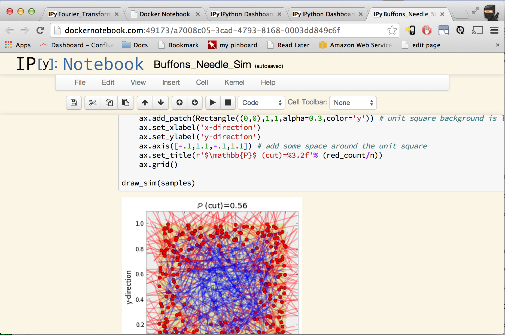
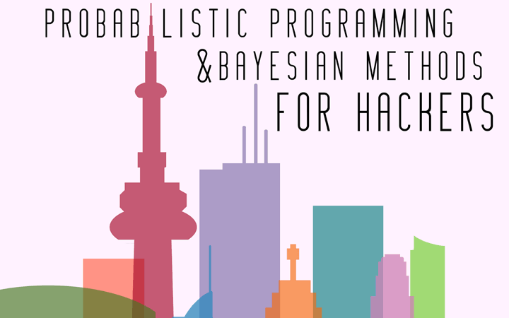

Docker Notebook
Launch an iPython notebook in under a second

Try out an example

Start from a blank notebook
Start from a public notebook on GitHub
Public Notebook GitHub Repo
Docker Repository (optional)
Find us on
GitHub